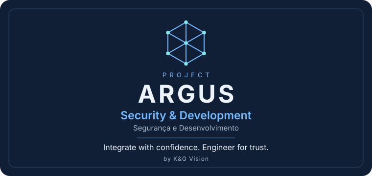

K&G VISION · LABORATÓRIO EXPERIMENTAL
Aprenda a avaliar interações com IA
Proteção de dados · AI Security · AI Assurance
Exercícios exclusivamente fictícios, locais e autorizados. Não insira informações reais. Não é DLP, verificação factual ou certificação de segurança.
Escolha um cenário
Resultado e aprendizado
Selecione sua previsão e execute a simulação.